Project Overview
The HSBC Wealth Management project involved designing a comprehensive wealth management experience within the HSBC mobile banking app. The goal was to provide customers with intuitive tools to track their portfolios, monitor investments, and make informed financial decisions.
Wealth Management Screens
A gallery of key screens designed for the wealth management feature, showcasing portfolio views, investment tracking, and financial insights.
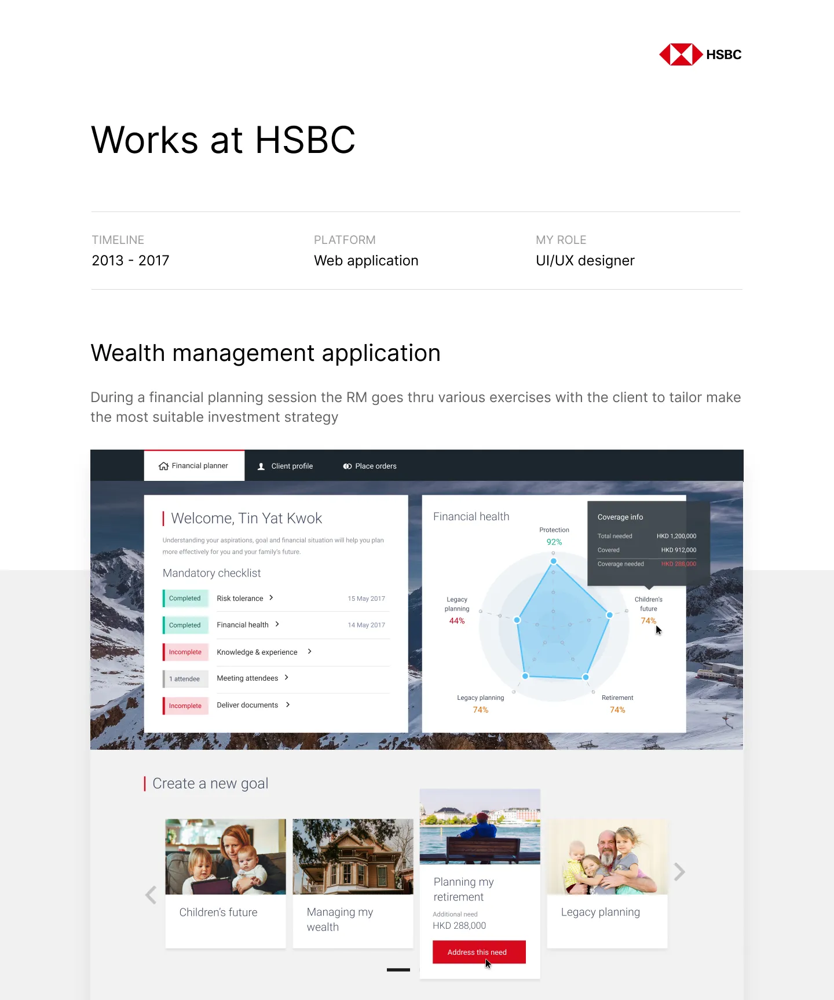
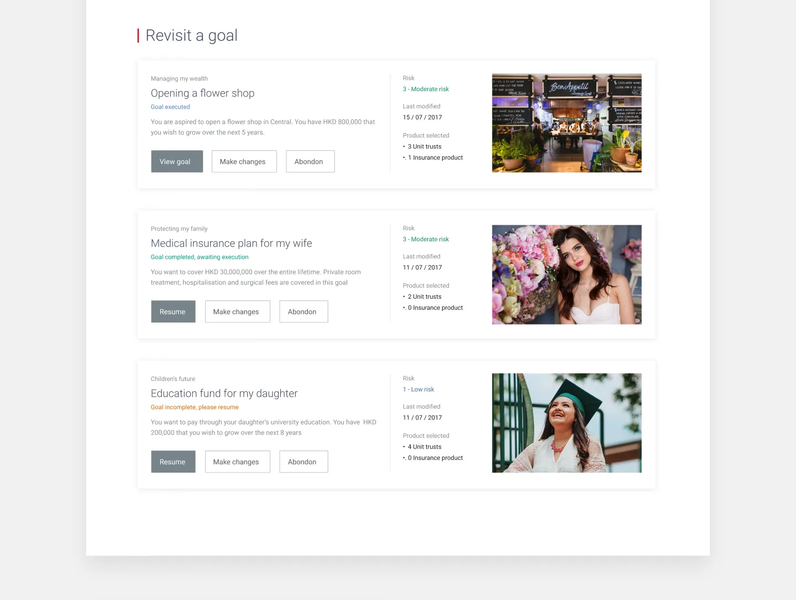
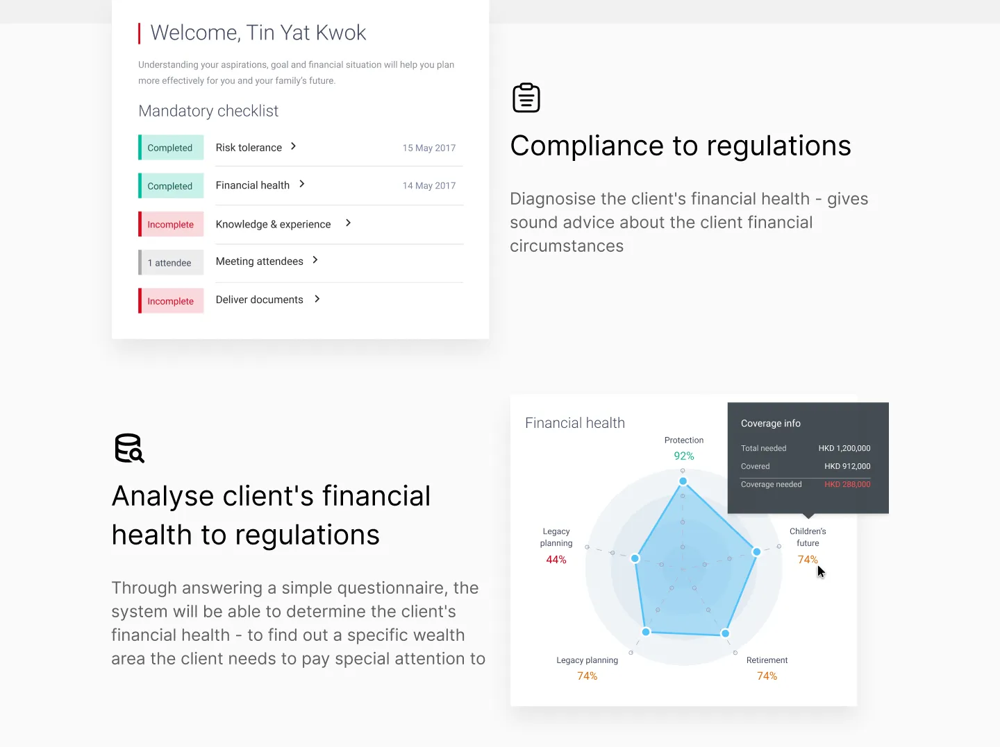
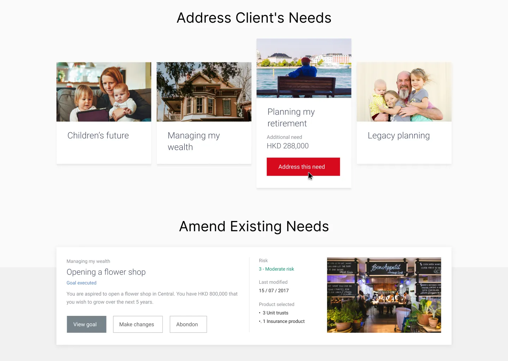
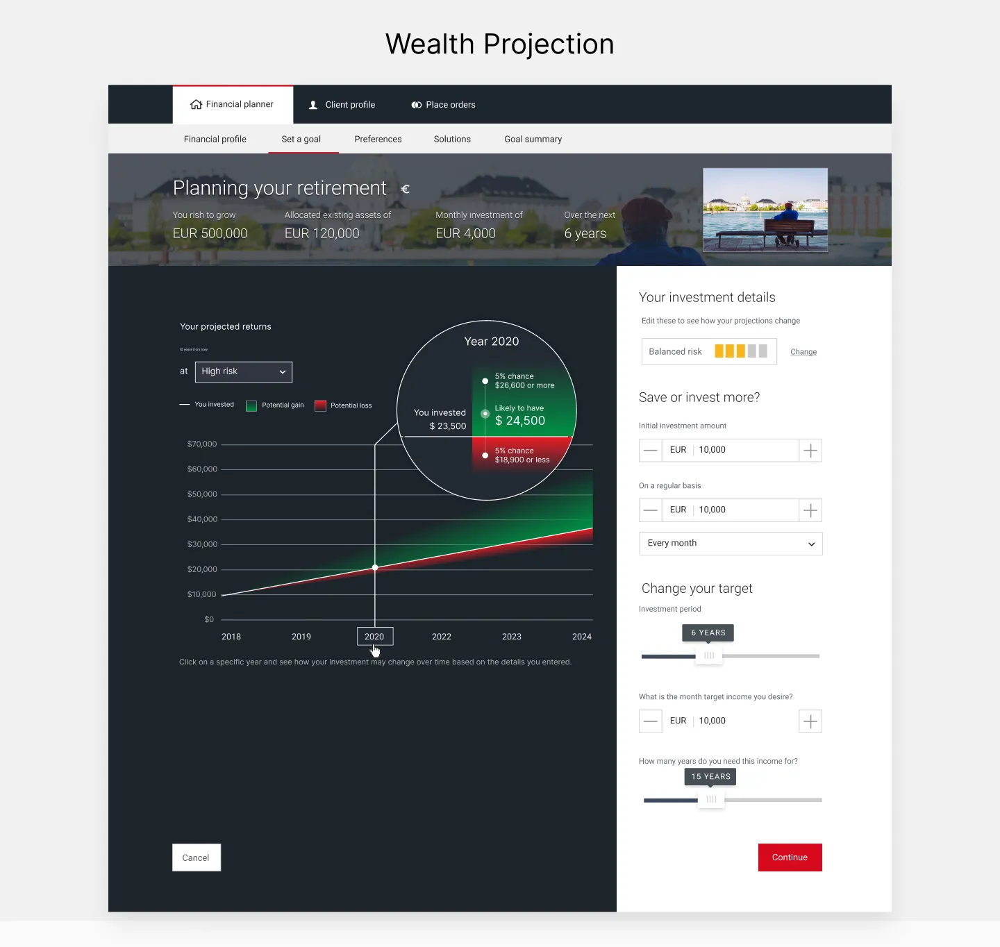
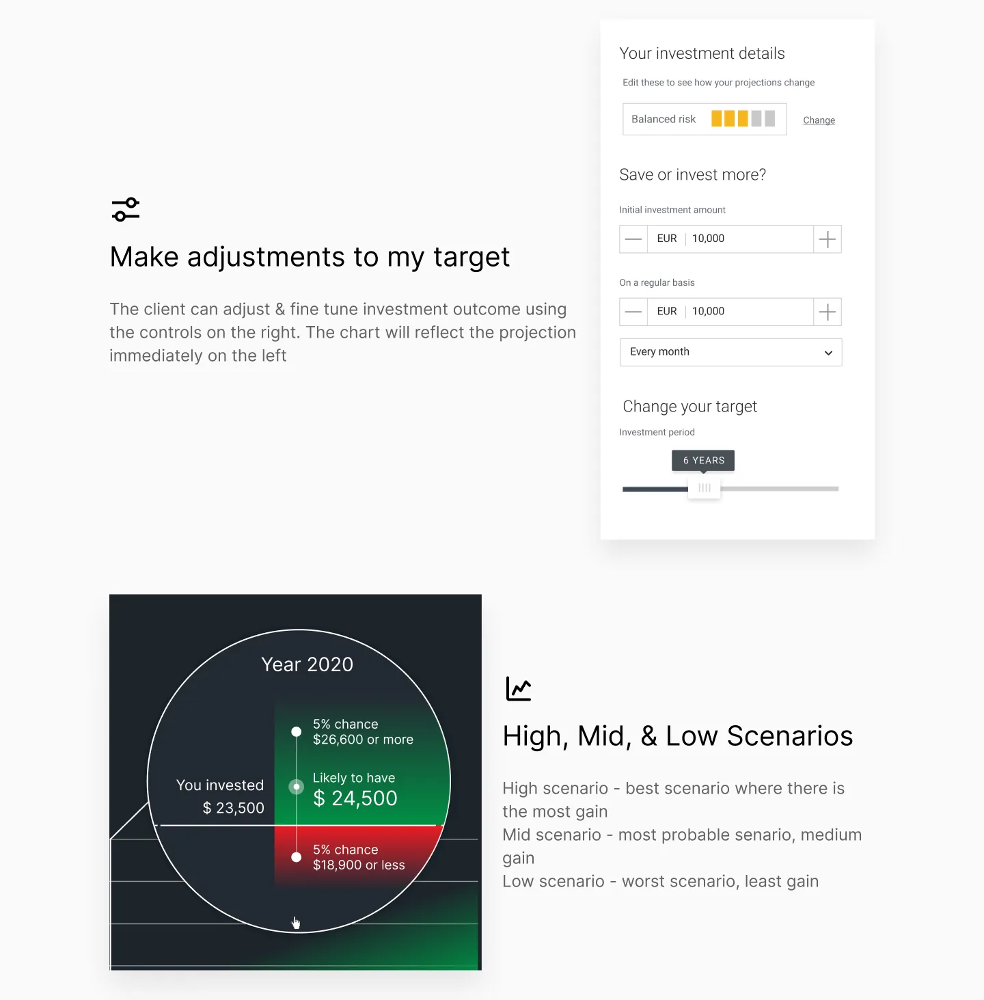
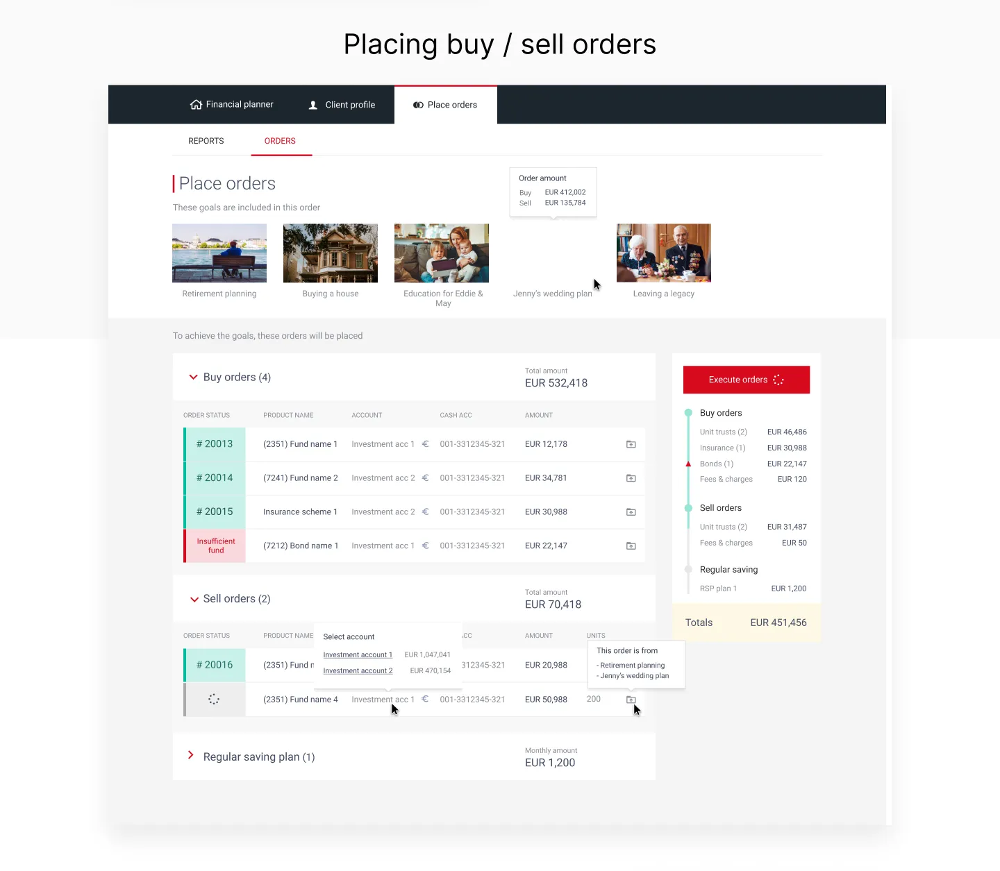
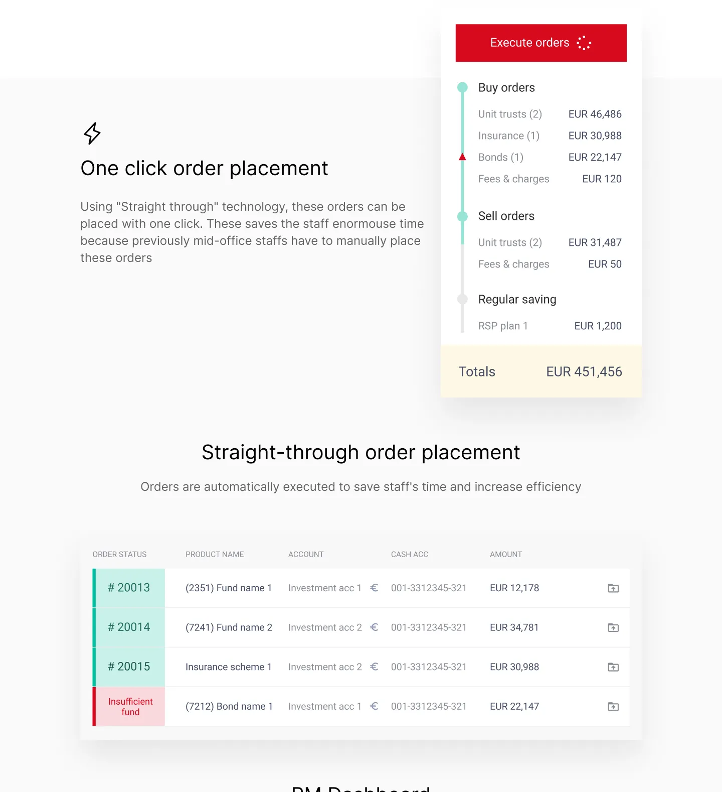
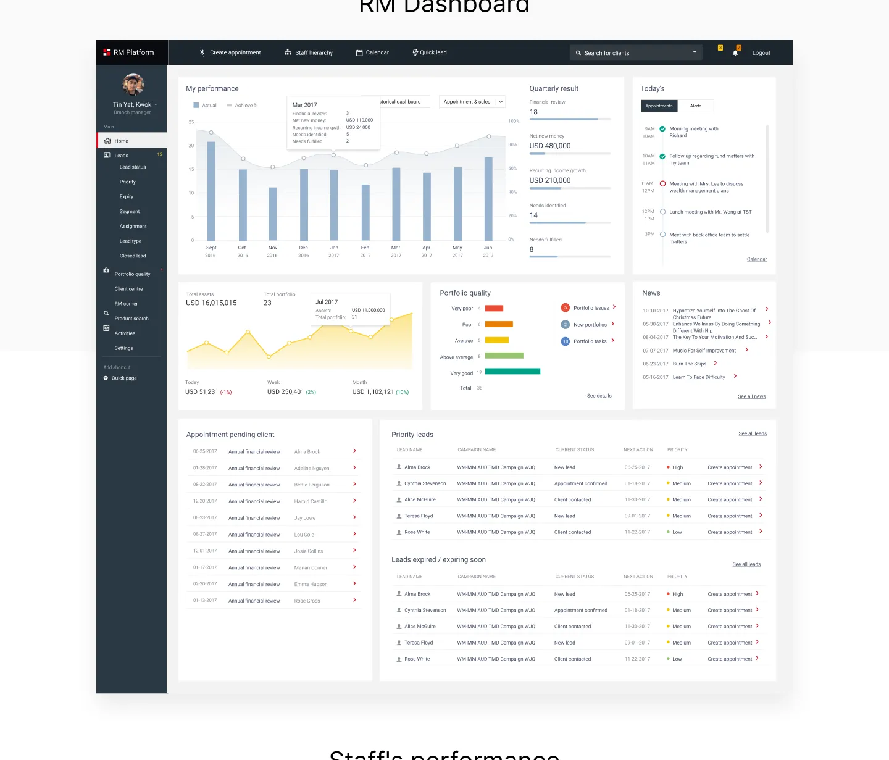
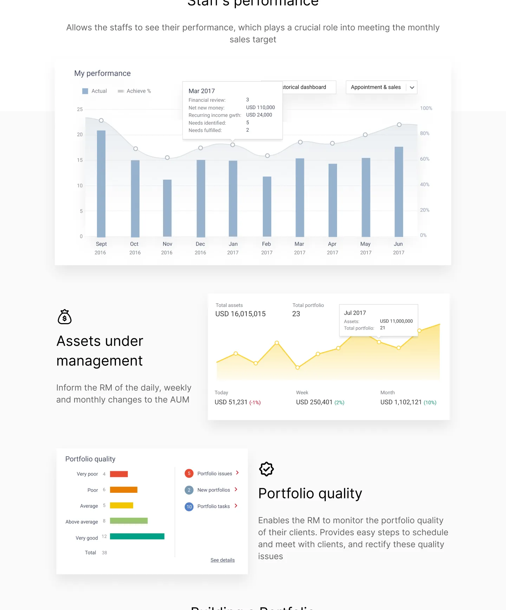
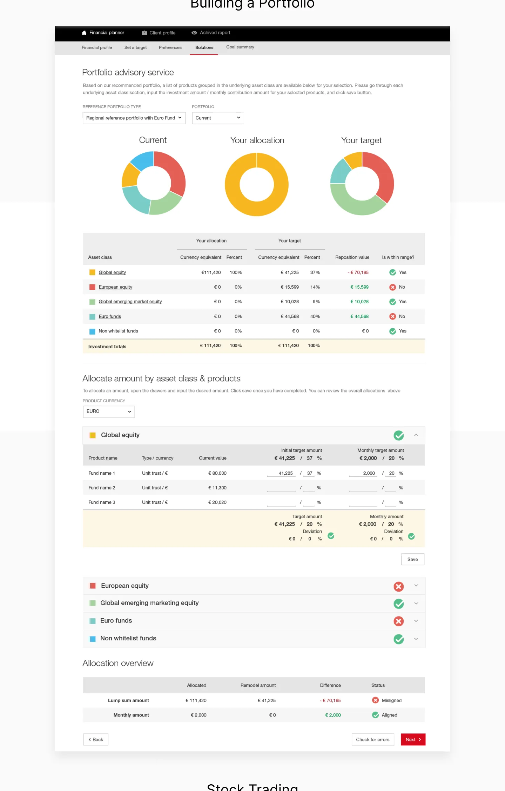
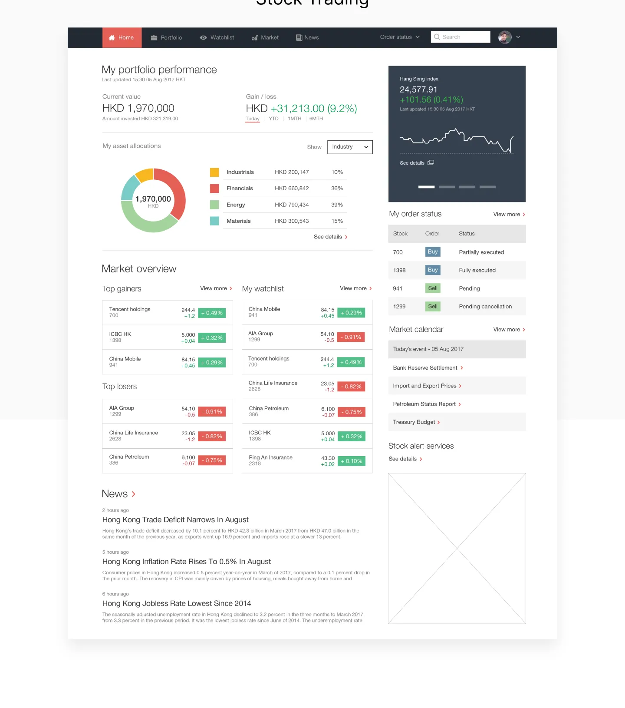
Key Design Contributions
- Designed comprehensive portfolio dashboard with clear visualization of assets and performance
- Created intuitive navigation for accessing different investment products and services
- Developed clear information architecture for complex financial data
- Implemented user-centered approach for risk assessment and investment recommendations
- Designed responsive layouts optimized for mobile banking experience
Impact and Results
After launching the wealth management feature, we saw significant improvements in user engagement and satisfaction:
The redesigned portfolio dashboard and investment tools led to a significant increase in feature adoption among existing HSBC customers. Users particularly appreciated the clear visualization of asset allocation and performance tracking capabilities.
The mobile-first design approach resulted in 60% of wealth management interactions happening via mobile devices, compared to 35% on the previous platform.
Outcome
The wealth management feature was successfully launched as part of the HSBC mobile banking app, providing customers with easy access to their investment portfolios and financial tools. The design balanced the need for comprehensive information with an intuitive, mobile-first experience.